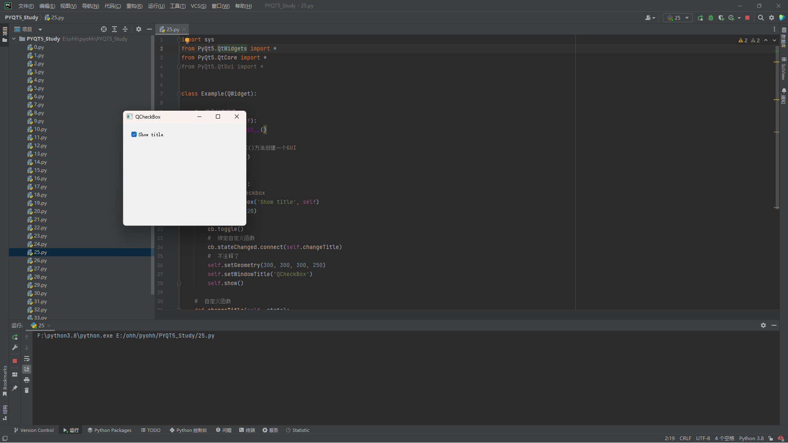
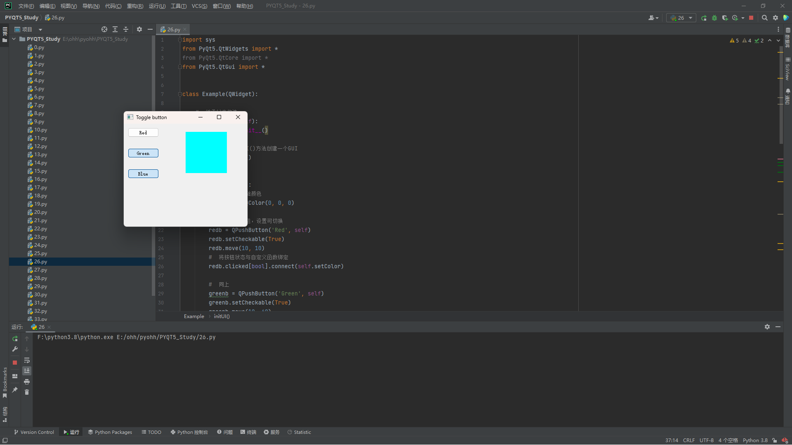
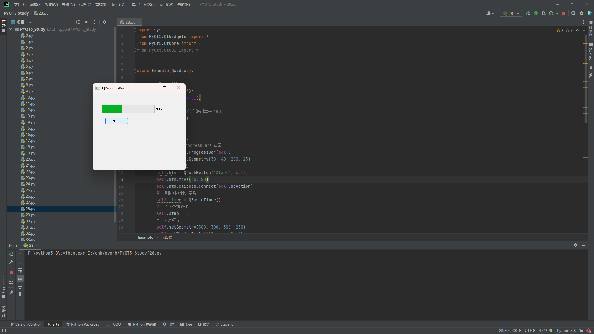
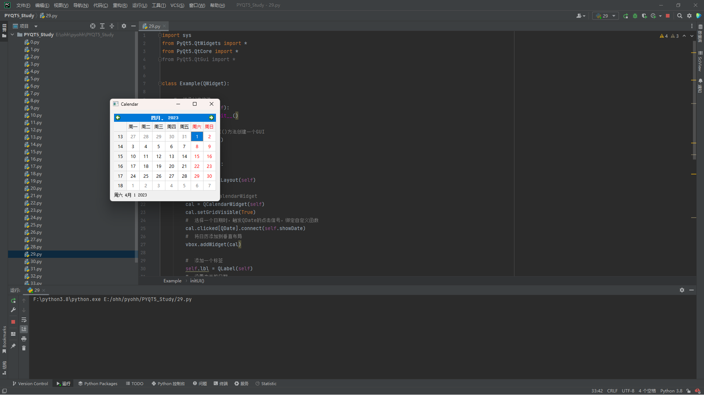
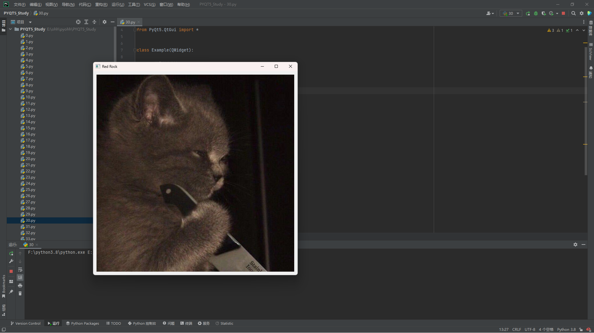
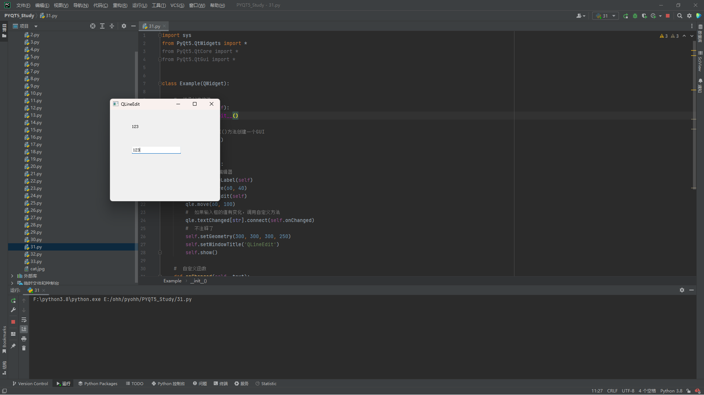
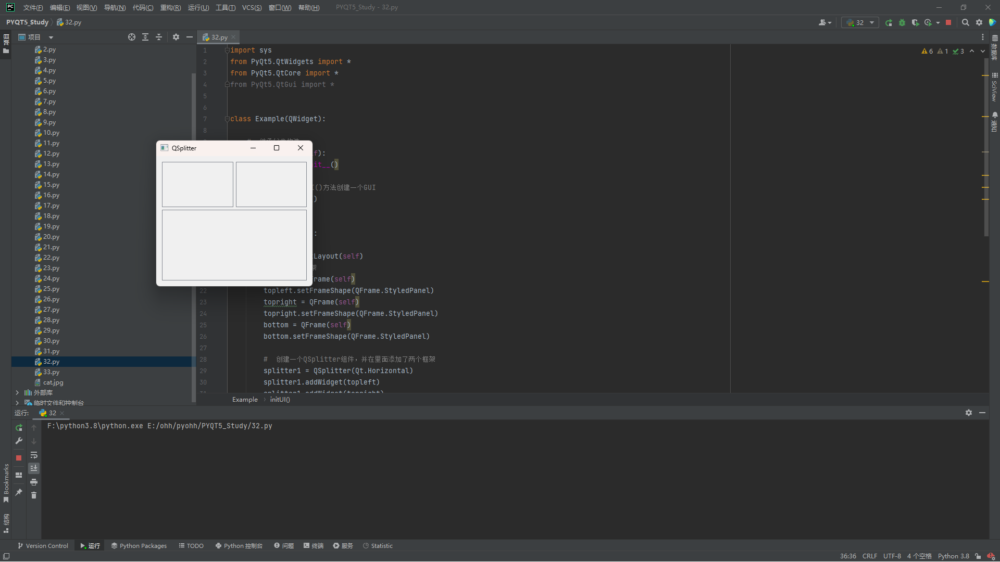
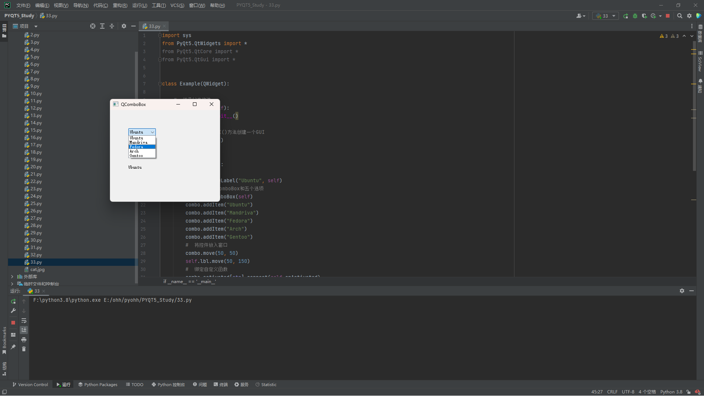

无特殊注明，所有案例只修改第一个案例的对应部分
QCheckBox
QCheckBox 组件有俩状态：开和关。通常跟标签一起使用，用在激活和关闭一些选项的场景
import sys
from PyQt5.QtWidgets import *
from PyQt5.QtCore import *
from PyQt5.QtGui import *
class Example(QWidget):
# 继承父类构造
def __init__(self):
super().__init__()
# 使用initUI()方法创建一个GUI
self.initUI()
# 初始化组件
def initUI(self):
# 添加一个checkbox
cb = QCheckBox('Show title', self)
cb.move(20, 20)
# 默认选中
cb.toggle()
# 绑定自定义函数
cb.stateChanged.connect(self.changeTitle)
# 不注释了
self.setGeometry(300, 300, 300, 250)
self.setWindowTitle('QCheckBox')
self.show()
# 自定义函数
def changeTitle(self, state):
# 检查框的状态，设置标题是否显示
if state == Qt.Checked:
self.setWindowTitle('QCheckBox')
else:
self.setWindowTitle(' ')
if __name__ == '__main__':
app = QApplication(sys.argv)
ex = Example()
# 进入应用的主循环中，调用exit()方法或直接销毁主控件时，主循环就会结束
sys.exit(app.exec_())
切换按钮
切换按钮就是QPushButton的一种特殊模式，它只有两种状态：按下和未按下，在点击的时候切换两种状态
# 初始化组件
def initUI(self):
# 设置一个基础颜色
self.col = QColor(0, 0, 0)
# 添加一个按钮，设置可切换
redb = QPushButton('Red', self)
redb.setCheckable(True)
redb.move(10, 10)
# 将按钮状态与自定义函数绑定
redb.clicked[bool].connect(self.setColor)
# 同上
greenb = QPushButton('Green', self)
greenb.setCheckable(True)
greenb.move(10, 60)
# 同上
greenb.clicked[bool].connect(self.setColor)
# 同上
blueb = QPushButton('Blue', self)
blueb.setCheckable(True)
blueb.move(10, 110)
# 同上
blueb.clicked[bool].connect(self.setColor)
# 添加一个框架，用于显示颜色
self.square = QFrame(self)
self.square.setGeometry(150, 20, 100, 100)
self.square.setStyleSheet("QWidget { background-color: %s }" % self.col.name())
# 不注释了
self.setGeometry(300, 300, 300, 250)
self.setWindowTitle('Toggle button')
self.show()
# 自定义函数
def setColor(self, pressed):
# 获取被点击的按钮
source = self.sender()
# 根据按钮是否按下设置rgb的值
if pressed:
val = 255
else:
val = 0
# 分别设置rgb的颜色
if source.text() == "Red":
self.col.setRed(val)
elif source.text() == "Green":
self.col.setGreen(val)
else:
self.col.setBlue(val)
# 为square添加颜色
self.square.setStyleSheet("QFrame { background-color: %s }" % self.col.name())
滑块
QSlider是个有一个小滑块的组件，这个小滑块能拖着前后滑动，这个经常用于修改一些具有范围的数值
# 初始化组件
def initUI(self):
# 添加水平滑块
sld = QSlider(Qt.Horizontal, self)
sld.setGeometry(30, 40, 100, 30)
sld.valueChanged[int].connect(self.changeValue)
# 添加一个标签，设置默认值为0
self.label = QLabel(self)
self.label.setText('0')
self.label.setGeometry(160, 40, 80, 30)
# 不注释了
self.setGeometry(300, 300, 300, 250)
self.setWindowTitle('QSlider')
self.show()
# 自定义函数
def changeValue(self, value):
# 根据value控制label的值
if value == 0:
self.label.setText('0')
elif value > 0 and value <= 30:
self.label.setText('1')
elif value > 30 and value < 80:
self.label.setText('2')
else:
self.label.setText('3')进度条
QProgressBar组件提供了水平和垂直两种进度条，进度条可以设置最大值和最小值，默认情况是0~99
# 初始化组件
def initUI(self):
# 添加一个QProgressBar构造器
self.pbar = QProgressBar(self)
self.pbar.setGeometry(30, 40, 200, 25)
# 添加一个按钮
self.btn = QPushButton('Start', self)
self.btn.move(40, 80)
self.btn.clicked.connect(self.doAction)
# 用时间控制进度条
self.timer = QBasicTimer()
# 进度条初始化
self.step = 0
# 不注释了
self.setGeometry(300, 300, 300, 250)
self.setWindowTitle('QProgressBar')
self.show()
# 重写时间函数
def timerEvent(self, e):
# 判断进度条
if self.step >= 100:
# 停止
self.timer.stop()
self.btn.setText('Finished')
return
# 控制进度条速度
self.step = self.step + 2
self.pbar.setValue(self.step)
# 自定义按钮函数
def doAction(self):
# 控制进度条开始或停止
if self.timer.isActive():
self.timer.stop()
self.btn.setText('Start')
else:
# 两个参数，过期时间和事件接收者
self.timer.start(100, self)
self.btn.setText('Stop')
日历
QCalendarWidget提供了基于月份的日历插件
# 初始化组件
def initUI(self):
# 垂直布局
vbox = QVBoxLayout(self)
# 创建一个QCalendarWidget
cal = QCalendarWidget(self)
cal.setGridVisible(True)
# 选择一个日期时，触发QDate的点击信号，绑定自定义函数
cal.clicked[QDate].connect(self.showDate)
# 将日历添加到垂直布局
vbox.addWidget(cal)
# 添加一个标签
self.lbl = QLabel(self)
# 设置为当前日期
date = cal.selectedDate()
self.lbl.setText(date.toString())
# 将标签添加到垂直布局
vbox.addWidget(self.lbl)
# 添加垂直布局到窗口
self.setLayout(vbox)
# 不注释了
self.setGeometry(300, 300, 300, 250)
self.setWindowTitle('Calendar')
self.show()
# 自定义函数，改变标签的值
def showDate(self, date):
self.lbl.setText(date.toString())
图片
QPixmap是处理图片的组件
# 初始化组件
def initUI(self):
# 创建一个水平布局
hbox = QHBoxLayout(self)
# 获取图片
pixmap = QPixmap("cat.jpg")
# 添加一个标签
lbl = QLabel(self)
# 将图片放入标签
lbl.setPixmap(pixmap)
# 将标签添加到水平布局
hbox.addWidget(lbl)
# 向窗口添加水平布局
self.setLayout(hbox)
# 不注释了
self.move(300, 200)
self.setWindowTitle('Red Rock')
self.show()
行编辑
QLineEdit组件提供了编辑文本的功能，自带了撤销、重做、剪切、粘贴、拖拽等功能
# 初始化组件
def initUI(self):
# 创建标签和编辑器
self.lbl = QLabel(self)
self.lbl.move(60, 40)
qle = QLineEdit(self)
qle.move(60, 100)
# 如果输入框的值有变化，调用自定义方法
qle.textChanged[str].connect(self.onChanged)
# 不注释了
self.setGeometry(300, 300, 300, 250)
self.setWindowTitle('QLineEdit')
self.show()
# 自定义函数
def onChanged(self, text):
# 改变标签文本
self.lbl.setText(text)
# 标签自适应文本内容
self.lbl.adjustSize()
QSPlitter
QSplitter组件能让用户通过拖拽分割线的方式改变子窗口大小
# 初始化组件
def initUI(self):
# 水平布局
hbox = QHBoxLayout(self)
# 创建三个框架
topleft = QFrame(self)
topleft.setFrameShape(QFrame.StyledPanel)
topright = QFrame(self)
topright.setFrameShape(QFrame.StyledPanel)
bottom = QFrame(self)
bottom.setFrameShape(QFrame.StyledPanel)
# 创建一个QSplitter组件，并在里面添加了两个框架
splitter1 = QSplitter(Qt.Horizontal)
splitter1.addWidget(topleft)
splitter1.addWidget(topright)
# 创建一个QSplitter组件，并在里面添加一个框架和QSplitter
splitter2 = QSplitter(Qt.Vertical)
splitter2.addWidget(splitter1)
splitter2.addWidget(bottom)
# 将控件放入窗口
hbox.addWidget(splitter2)
self.setLayout(hbox)
# 不注释了
self.setGeometry(300, 300, 300, 250)
self.setWindowTitle('QSplitter')
self.show()
下拉框
QComboBox组件能让用户在多个选择项中选择一个
# 初始化组件
def initUI(self):
# 一个标签
self.lbl = QLabel("Ubuntu", self)
# 创建一个QComboBox和五个选项
combo = QComboBox(self)
combo.addItem("Ubuntu")
combo.addItem("Mandriva")
combo.addItem("Fedora")
combo.addItem("Arch")
combo.addItem("Gentoo")
# 将控件放入窗口
combo.move(50, 50)
self.lbl.move(50, 150)
# 绑定自定义函数
combo.activated[str].connect(self.onActivated)
# 不注释了
self.setGeometry(300, 300, 300, 250)
self.setWindowTitle('QComboBox')
self.show()
# 自定义函数
def onActivated(self, text):
# 改变标签的文本
# 自适应大小
self.lbl.setText(text)
self.lbl.adjustSize()